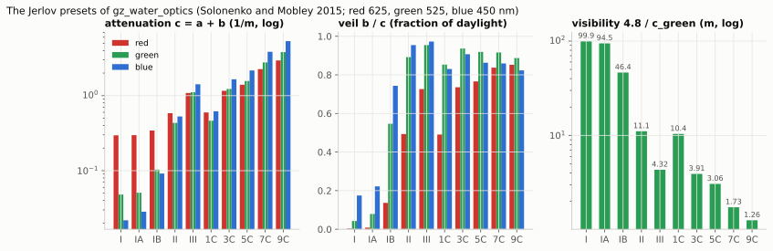
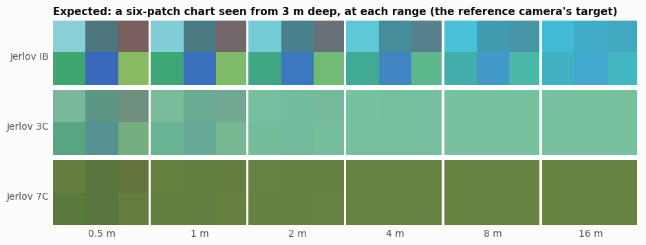

See through the water
Under water, a camera sees the water as much as what is in it: far objects fade into a veil of the water’s colour, red goes first, and everything gets darker the deeper you go. Give the world its water, then give a vehicle an underwater camera.
Give a world its water
Add the water optics system to the world and name the kind of water, by its Jerlov type:
<plugin filename="gz-maritime-water-optics-system"
name="gz::sim::maritime::WaterOptics">
<jerlov>3C</jerlov>
</plugin>
The open ocean types run from I, the clearest, through IA, IB, II and
III; the coastal ones from 1C to 9C, the murkiest. Coastal water is
greener and murkier than ocean water. Without the system, the world has
clear water. II and III scatter far more than real open ocean, so for
open ocean use IB, or IB with a <visibility>.
If your water is |
Try |
Visibility |
|---|---|---|
Tropical open ocean, very clear |
|
about 46 m |
A clear coast |
|
about 10 m |
A typical harbour or coast |
|
about 4 m |
A murky harbour, a river mouth |
|
about 1.7 m |

Every type: how fast each colour fades, the colour of the veil, and how far you can see.
Set how far you can see
Divers and pilots describe water by its visibility. Give it in metres and the system scales the water type to it. Clearer water turns bluer, as real water does, and none is clearer than pure water, about 100 m:
<plugin filename="gz-maritime-water-optics-system"
name="gz::sim::maritime::WaterOptics">
<jerlov>3C</jerlov>
<visibility>8</visibility>
</plugin>
This is coastal, green water, but clearer than usual: a black target disappears at about 8 m.
Change it while the world runs
gz topic -t /world/default/water_optics/set -m gz.msgs.Param \
-p 'params {key: "visibility" value {type: DOUBLE double_value: 3}}'
Any element of the plugin is a key: jerlov takes a string, visibility
and water_level a number, the per-channel values a string "r g b".
Check what the world has
gz topic -e -t /world/default/water_optics_info -n 1
prints the water type, the visibility, and per channel the numbers a camera uses. The reference lists every element and the presets.
Add an underwater camera
Use an rgbd_camera sensor, which renders colour and depth together, give
it a <topic>, and put the underwater camera plugin inside it:
<sensor name="camera" type="rgbd_camera">
<topic>rov/camera</topic>
<update_rate>15</update_rate>
<camera>
<horizontal_fov>1.2</horizontal_fov>
<image><width>640</width><height>480</height></image>
<clip><near>0.1</near><far>60</far></clip>
<depth_camera><clip><near>0.1</near><far>60</far></clip></depth_camera>
</camera>
<plugin filename="gz-maritime-underwater-camera-system"
name="gz::sim::maritime::UnderwaterCamera">
<exposure>auto</exposure>
</plugin>
</sensor>
The far clip is where the camera stops seeing anything but water: past it, every pixel is the veil. Keep it beyond the water’s visibility.
See its image
The camera publishes rov/camera/underwater/image beside the plain
rov/camera/image. In the GUI, add an Image Display and pick the topic; in
ROS, bridge it like any camera:
- gz_topic_name: rov/camera/underwater/image
ros_topic_name: rov/camera/underwater/image
ros_type_name: sensor_msgs/msg/Image
gz_type_name: gz.msgs.Image
direction: GZ_TO_ROS
- gz_topic_name: rov/camera/underwater/camera_info
ros_topic_name: rov/camera/underwater/camera_info
ros_type_name: sensor_msgs/msg/CameraInfo
gz_type_name: gz.msgs.CameraInfo
direction: GZ_TO_ROS
The demo world kai_gazebo/worlds/underwater_camera_demo.sdf has colour
charts at 0.5 to 16 m in front of a camera, to see each water type:
gz sim underwater_camera_demo.sdf

What the chart must look like from 3 m deep, by range, in three waters.
The GUI view, and every camera at once
To see through the water in the GUI too, and in every camera without a
plugin on each, include the underwater_optics model:
<include>
<uri>model://underwater_optics</uri>
</include>
The renderer then draws the water into every surface, on the GPU. An underwater camera plugin in the same world passes its image through, so the water is not applied twice. The water surface seen from below fades into the water too, and open water with nothing in view is the water’s colour.
Lights at depth
At night, or deep, there is no daylight: set the world’s water to
<daylight>0</daylight> and give the vehicle spot lights. With the
underwater_optics model in the world, a spot or point light with lamp in
its name is a lamp, up to four: its light fades through the water both ways,
and the water scatters its beam back to the camera. Other lights, a harbour
light on a pier for one, are lit as in air:
<light type="spot" name="lamp_port">
<pose>0.3 0.2 0 0 0 0</pose>
<direction>1 0.1 -0.1</direction>
<intensity>40</intensity>
<attenuation><range>40</range><quadratic>0.02</quadratic></attenuation>
<spot><inner_angle>0.5</inner_angle><outer_angle>1.0</outer_angle><falloff>1</falloff></spot>
<cast_shadows>false</cast_shadows>
</light>
Turn a lamp off or move it while running with the world’s light_config
service, like any light. Lamps cast no shadows here. A lamp set to an
intensity of 0 costs nothing.
Check it against real footage
To know how close the simulation is to your water, photograph a colour chart under water, and simulate the same shot:
Dive with a chart. A ColorChecker (24 patches) facing the camera at a measured range, close (half a metre to a metre; farther only in clear water: in coastal water a chart 2 m away is all but lost in the veil), at a measured depth, in daylight; note the water’s visibility (or measure its Jerlov type). Shoot a few frames at each range, with the camera’s exposure fixed and no white balance, as the simulation has none: a 10 % white balance error is enough to pick the wrong water.
Simulate the shot, in each water you think it may be. The tools are installed in
lib/gz_underwater_camera:ros2 run gz_underwater_camera make_chart_world.py --out chart_3c.sdf \ --range 0.5 --depth 2 --jerlov 3C --width 1280 --height 720 --hfov 1.2 gz sim -s -r chart_3c.sdf & ros2 run gz_underwater_camera save_frame.py \ --topic /chart/camera/underwater/image --out sim_3c.png
with your camera’s resolution and field of view; the same for
5Cand so on.chart_3c.jsonholds the patches’ boxes in the render.Mark the patches in your photo: a
dive.jsonof the 24 boxes, in the same order (chart_3c.jsonshows the format). They need not line up with the render’s.Compare.
ros2 run gz_underwater_camera chart_validation.py \ --real dive.png --real-patches dive.json \ --sim 3C=sim_3c.png --sim 5C=sim_5c.png --sim-patches chart_3c.json \ --report report.png
It lists the waters by their mean angular error, closest first, with the error per patch: hue and saturation, not brightness. OceanSim reports 8 to 14 degrees for its scenes. It also prints the luminance of each render against the photo, for information: it does not enter the ranking. An image whose patches barely differ (under 3 degrees between any two) is refused with exit code 3: the chart is lost in the water, and every water would look alike. With
--threshold, a closest water whose error is not under it exits 1.
The water with the smallest error is the nearest; refine it with
<visibility> or explicit coefficients the same way. At half a metre, 2 m
deep, neighbouring types are 7 to 13 degrees apart (1C and 3C 7, 3C and 5C
8.5, 5C and 7C 11), so compare a few around your guess.
More of the water
Forward scatter blurs what is far:
<forward_scatter>0.01</forward_scatter>in the camera plugin.The camera’s port:
<port>flat</port>refracts like a flat port (a narrower, magnified view);<port>dome</port>changes nothing.Caustics dance on a shallow seabed under waves:
<caustics>1</caustics>in the water optics, with theunderwater_opticsmodel in the world. Off by default; none on flat water.Marine snow:
<marine_snow>0.2</marine_snow>in the water optics; specks show in the lamps’ light.The surface from below shows Snell’s window: the sky through a 48.6 degree cone overhead, a mirror of the water outside it. The surface casts no shadow: the sun, and the caustics, reach the seabed under it whether or not the sun casts shadows. The plan is in UNDERWATER_CAMERA_PLAN.md.